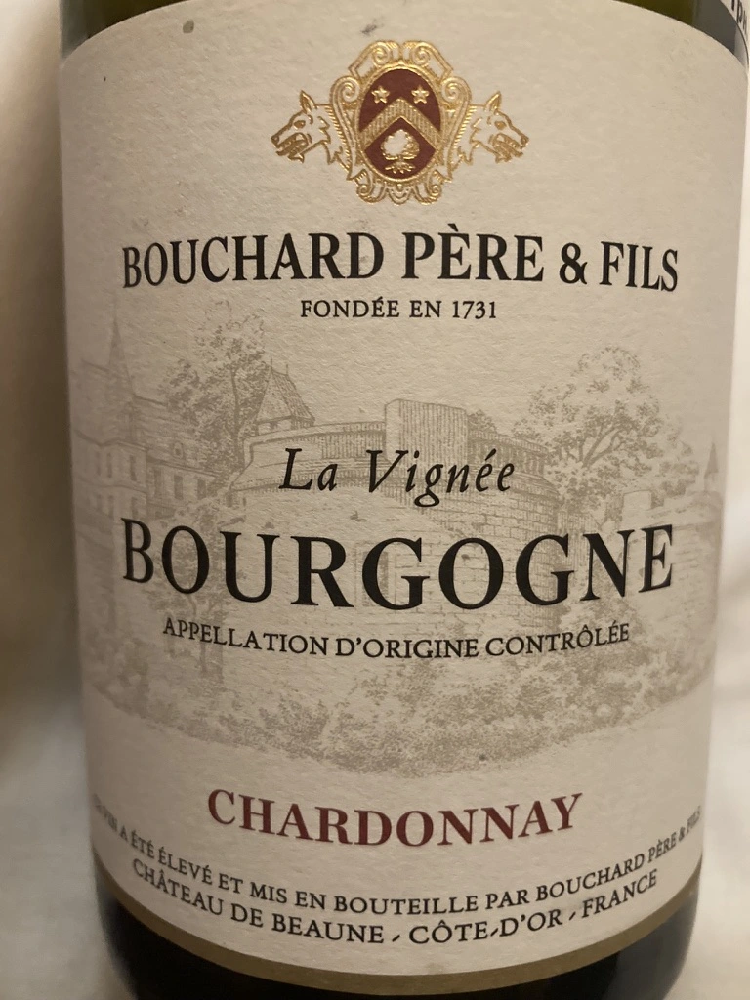

- Type
- White Still, Dry
- Producer
- Bouchard Père et Fils
- Vintage
- 2019
- Location
- France, Bourgogne AOC
- Grapes
- Chardonnay
- Alcohol
- 12.5
- Sugar
- NA
- Price
- 1150 UAH
- Cellar
- N/A
Ratings
2022-04-22 - 7.00
I expected more, even from such a wide appellation. On one hand, it’s my personal problem. On the other hand, wine less interesting than it should. It’s fine though. With nice notes of green fruits and citrus. Good balance, fresh, with long aftertaste. But ask me on the second day anything about this wine and I would shrug. Ah, and $38 is a rip off (but as always, price doesn’t affect my score).